바다는 무엇을 따라야 하는가 — 연재 1회
바다는 무엇을 따라야 하는가?
Maritime space follows something?
‘형태는 기능을 따른다’(Form follows function)라는 루이스 설리반의 유명한 말이 있습니다. 디자인은 하나의 작동하는 엔진의 개념으로 산업시대에 걸맞게 그 역할을 충실히 지켜왔습니다. 디자인은 유형적인 내용에서 무형적인 형이상학적인 가치를 추구해 나가는 하나의 가치 부여 수단으로 발전해 나가고 있습니다. 시대정신에 따라 목적과 수단은 달라집니다. 그 시대가 가지고 있는 가장 큰 가치에 대한 여러 대안들을 제시하는 그러한 시대가 되었습니다. 작금에 이르러서는 과연 우리 공간환경의 형태가 무엇을 추구하고 따라야 하는가에 대한 고민들을 하게 되었습니다. 네덜란드의 디자인그룹 MVRDV는 Form follows Data라고 패러디하며 모든 공간 디자인에 데이터 수치를 근거로 디자인을 하고 또 심지어 Form follows Money하고 하며 경제성 중심의 디자인이 중요하다라는 의미를 강조하는 디자이너들도 있었습니다.
어떤 계획이던 모든 계획은 목적을 지니고 있습니다. 그 목적이 불분명할 때 오류가 생기고 이해하기 어렵고 불만족스런 결과를 나타내게 됩니다. 이는 모든 디자인과 계획에서 바로 아젠다(agenda)를 중요하게 여겨야 하는 이유입니다. 새로운 아젠다를 찾아내고 그 아젠다를 실현하기 위한 과정의 수단으로 디자인을 바라봅니다. 그리고 그 눈으로 ‘바다’를 바라봅니다. 경외의 대상이고 거대한 자연의 힘이라는 이미지를 가진 ‘바다’를 시대의 아젠다를 만들어 내기 위해 새로운 접근을 시도합니다.
우리에게 바다는 하나의 잠재적 대상이고 관조적 대상인 조금은 거리가 떨어져 있는 듯 한 그런 곳이었습니다. 그러한 바다에 이제 디자인이라는 가치부여 엔진은 새로운 부산물과 공간으로서의 추구해야할 가치들을 보여주게 될 것이고 인간과 자연을 위한 공간가치를 창출하게 되리라 생각합니다. 연구와 탐구의 대상으로가 아닌 인간과 바다가 가까이 상생할 수 있는 창의적 공간의 대상으로 말입니다. 바다에 무궁무진하게 숨어있는 가치를 만들어 내려는 디자이너의 의지를 가지고 바다공간에의 형이상학적인 추구의 기지개를 폅니다.
본 글에서는 현재 진행되고 있는 해양 공간환경의 최근 프로젝트들을 순차적인 연재를 통해 어떠한 새로운 가치들을 중요시 여기고 구현하고 디자인하려 했는지 살펴보려 합니다. 특히, 해양공간환경 구성에서의 접근성(Accessibility), 정체성(Locality), 연계성(Linkage), 사용성(Mixed-Use)의 가치를 중심으로 살펴보며 이를 통해 산업자원의 보고를 넘어 지속가능한 삶의 무대로서 해양 연안 공간환경을 어떻게 바라보고 디자인 할 것인가? 대한 고민을 사례 중심으로 해보고자 합니다.
‘형태는 가치를 따른다’라는 서두에 나온 아젠다처럼 여러분은 해양공간환경이 무엇을 따라야 한다고 생각하십니까? (Maritime space follows something?) 여기부터가 창조적이고 우리에게 맞는 새로운 해양 공간환경 디자인의 새로운 시작일 것입니다. 그래서 새로운 디자인의 관점으로 바다를 바라보려합니다.
1. 캐나다 벤쿠버 콜 하버(Coal Harbour) 워터프론트
해당 지역은 캐나다 벤쿠버의 해안가에 위치하고 있고 콜 하버 주변은 조성 현황뿐만 아니라 유지관리를 가능케 하는 다양한 요소가 형성되어 있습니다.
이 공간의 디자인 기술의 방향 및 목표는 다음과 같습니다.
- 워터 프론트의 그린웨이와 도시 차원, 근린주구 차원의 그린웨이와의 유기적 연계를 도모
- 워터 프론트 인접 조성단지 건물에 벽면, 옥상녹화 도입
- 수변에 다양한 폭과 형태의 녹지 휴식공간을 조성하고 아파트 단지와 해안 사이에 거주민 위한 레크리에이션 및 휴식 공간 조성
- 자전거 전용도로와 보행자 전용도로를 철저하게 분리, 이를 위한 안내판 조성
즉, 캐나다 벤쿠버 콜 하버 수변공간의 가치는 연계성(Linkage)을 중심으로 디자인되었습니다. 워터프론트의 공간이 수변공간으로서의 단일 기능으로 점적인 공간으로 존재하는 것이 아니라 육역의 도시공간 기능들과 밀접하게 연계되어 유기적인 관계를 갖게됨으로서 공간의 장소성(placeness)를 창출하고 지속가능한 공간으로 구성되었습니다.
그림 2 수변 그린웨이
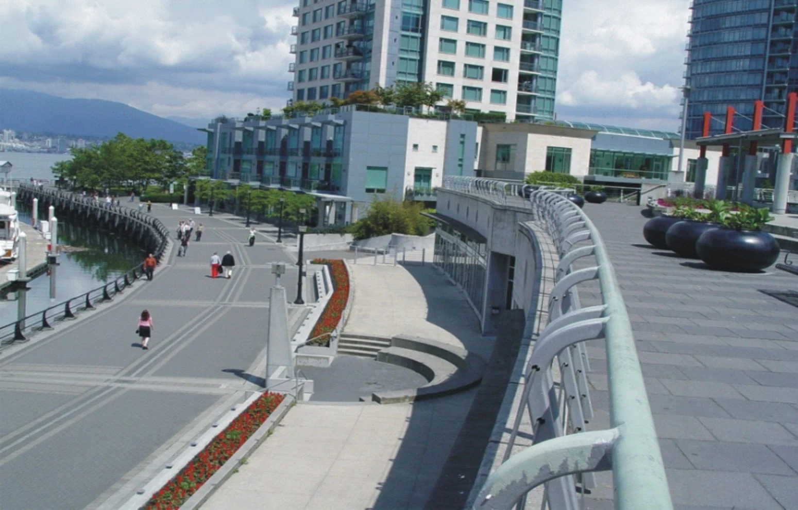
그림 3 벽면, 옥상녹화가 도입된 인접단지
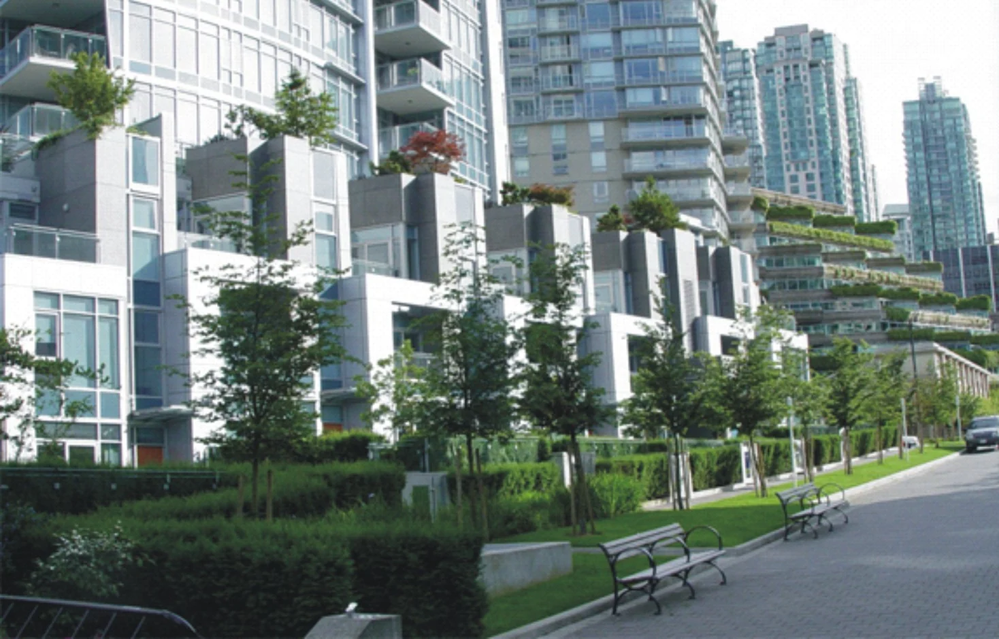
그림 4 자전거 전용도로, 보행자 전용도로의 분리
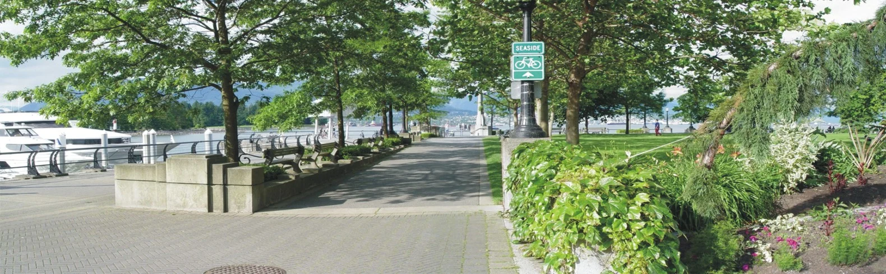
2. 호주 시드니 피라마 공원(Pirrama Park)
해상 경찰서는 1980년대 Pyrmont에 건축되었으며 2005년 시드니 항구 갯벌 기관에 의해 시작된 지역 사회 캠페인을 통하여 전 해상 경찰서 자리를 공공공간 활용을 위한 재생 개념으로 구축되었습니다. 2009년~2010년간 공원화 작업이 진행되었고 총 예산은 26,000,000달러가 투입되었습니다.
재생을 함에 있어 주요 공간 디자인 전략은
- 대규모 녹지 공간은 여가와 놀이공간 제공, 공원의 가장자리에 유칼립투스 나무숲으로 경계
- 피라마 도로로 허버트 거리를 연결하는 계단을 절벽 상단과 물가 산책로 사이로 설치, 연결성 강화
- 캐노피 구조물이 차양 효과와 동시에 공원의 구심점 역할을 함
- 수변 근처에 카페, 피크닉과 바베큐 시설, 친수 놀이터 등을 설치
- 폴(Pole) 정원은 원래의 부두 목재를 재사용하여 장소 특유의 해양 유산을 기록
그림 5 피라마 공원 내 녹지
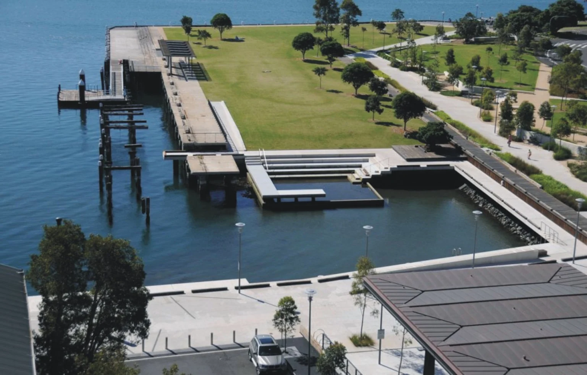
호주 시드니 피라마 공원(Pirrama Park)의 경우 기존 해상 경찰서 공간을 공공의 목적에 밪도록 재생하였다는 공공성의 가치에 그에 맞는 공공적복합 사용성(Mixed-Use)에 기능이 맞춰져 사용자 중심의 친수공간으로 디자인된 해안 공간환경 사례입니다.
그림 6 수변테라스 디자인
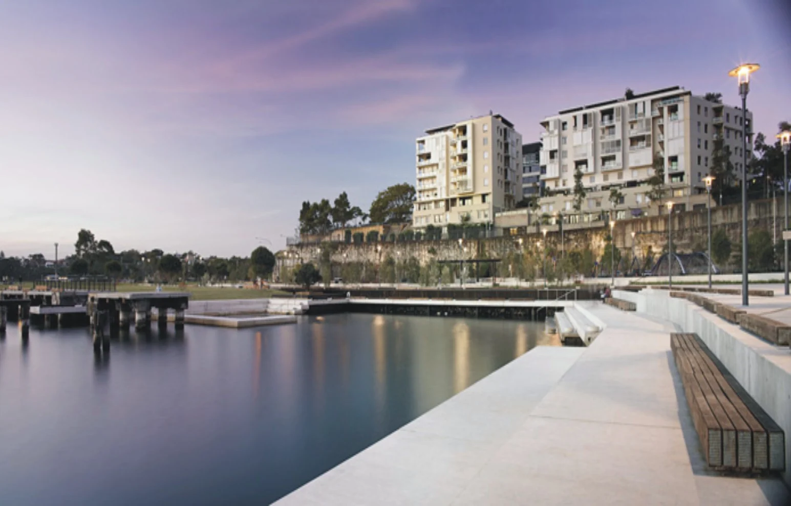
그림 7 어린이 공원과 놀이 시설
그림 8 허버트 거리와 연결하는 절벽 계단
(image:)
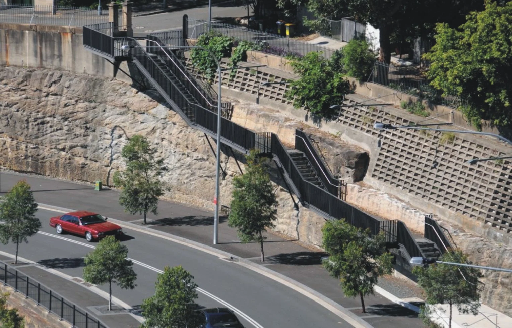
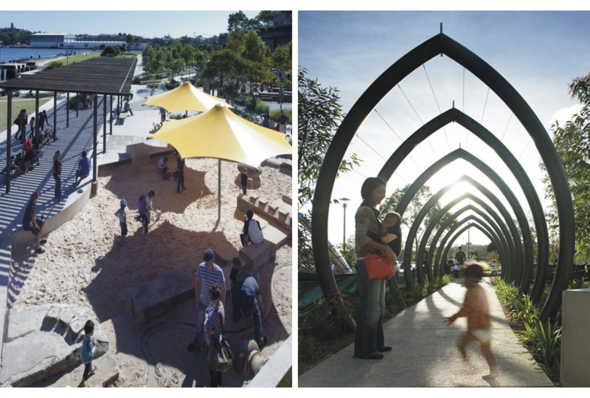
3. 호주 뉴사우스 웨일즈 잭 에반스 보트 하버(Jack Evans Boat Harbour)
그림 9 해변 콘크리트 데크 (image: www.aspect.net.au)
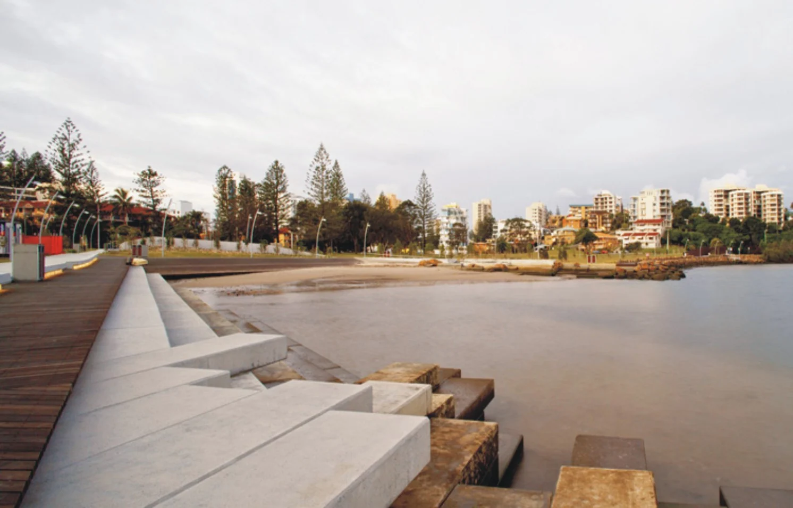
2011년 AILA NSW Awards를 수상한 뉴사우스 웨일즈 잭 에반스 보트 하버는 뉴사우스 웨일즈 트위드 헤즈에 위치한 항구로서 트위드 샤이어 협의회에 의해 2011년 공원화 조성사업이 시작되었으며 8,500,000달러의 예산이 투입되었습니다.
공간환경의 계획 특징은 해변 데크와 바위 헤드, 수변 원형 극장, 수영 구역, 낚시 포인트와 보트 시설 등의 사용성을 중심으로 디자인되었고 특히 안전과 방재측면의 디자인이 가미 되었는데 해수면 상승, 기후 변화에 대비, 조수 범람을 견딜 수 있도록 해안가를 디자인 하였습니다.
그림 10 해변 산책로
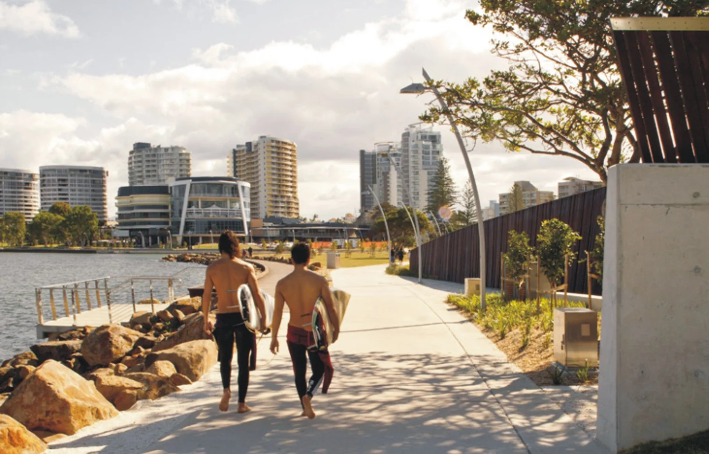
4. 캐나다 퀘벡 프롬나드 사무엘 챔플레인(Promenade Samuel-De Champlain)
2006년~2008년 기간공사끝에 준공된 캐나다 퀘벡 프롬나드 사무엘 챔플레인은 세인트 로렌스 강을 따라 2.5km에 이르는 수변 산책로로서 도시의 400주년을 기념하기 위해 진행된 프로젝트입니다. 면적은 200,000㎡에 이르며 1,500그루의 나무, 10만 개 이상의 공장이 대상지에 포함되어있습니다.
그림 12 수변 산책로 및 제방
그림 13 전망대
그림 14 산책로와 도로 간 연결 계단
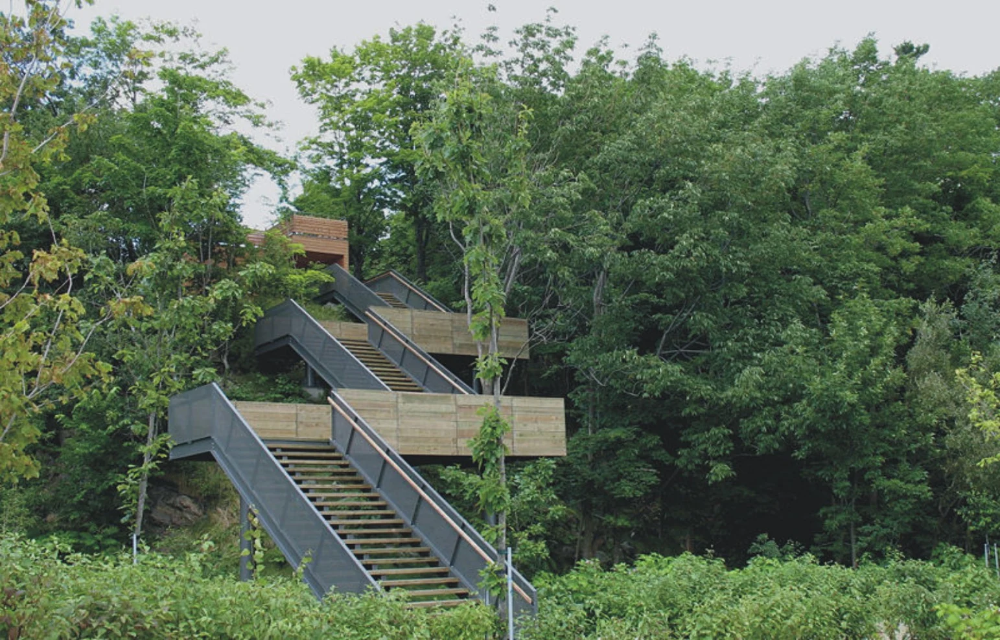
그림 15 공원 바닥패턴, 편의시설물 및 분수
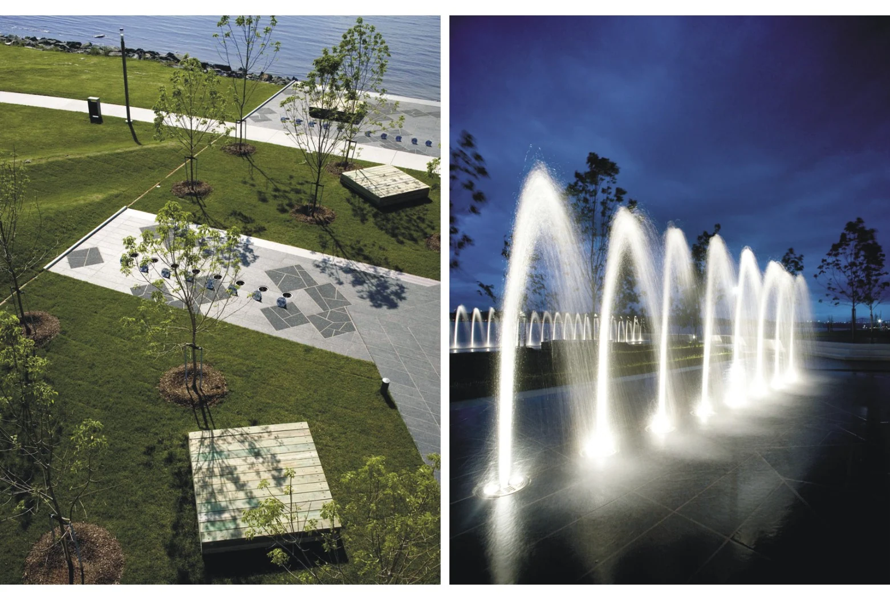
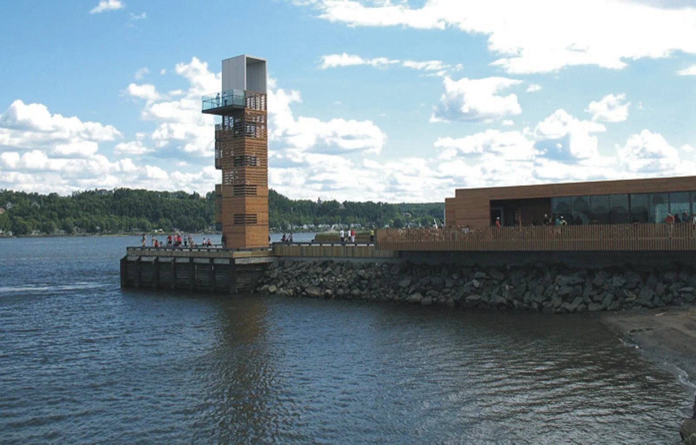
image:www.capitale.gouv.qc.c/www.bonjourquebec.com
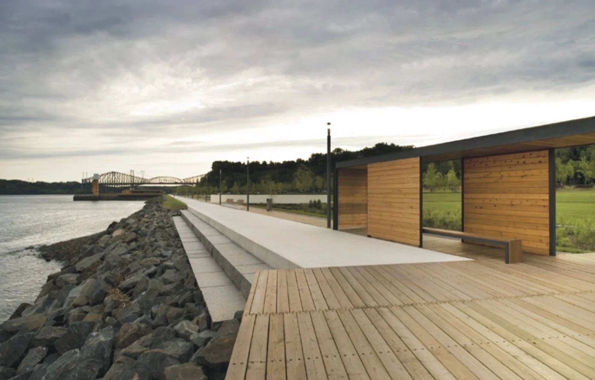
퀘벡 프롬나드 사무엘 챔플레인은 크로스 컨트리 스키, 사이클링, 하이킹, 식물 관찰, 해양 스포츠 등 복합기능을 가질 수 있게 디자인 되었으며 특히 주변부 공간을 중심으로 연회장, 회의실, 컨퍼런스 룸 등을 갖추어 다기능적인 복합 공간이 되도록 하여 많은 방문객들의 집객효과를 통한 활성화를 목적으로 하였고 특히 전망대 공간을 디자인하여 지역 랜드마크로도 자리 잡았습니다.
5. 스페인 베니돔 씨 프론트
(Benidorm Seafront)
스페인 서부 지중해인 발렌시안 지역에 위치한 베니돔 씨 프론트는 1960년 이전까지 작은 마을이었으나 건축디자인사무소 OAB가 설계한 해변 산책로와 함께 호텔, 고층 빌딩, 리조트 등이 위치하게 되며 유명한 관광.휴양 도시 공간이 되었습니다.
그림 16 파도 모양의 해변 산책로
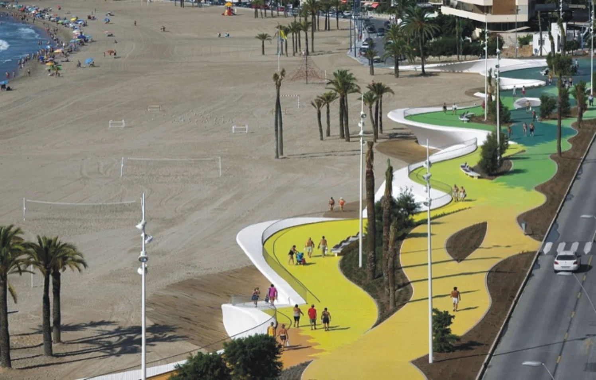
베니돔 씨 프론트의 특징을 살펴보면 해안선을 따라 파도와 절벽 모양을 재현한 디자인 컨셉으로 유명한 해변 산책로가 디자인되어 있는데 이 공간 특징은 상부와 하부를 분리하여 상위는 시내를 통과하는 사람들, 하부는 해변가 관광객이 통행하도록 동선이 구성되어 있습니다.
그림 17 도심을 방문하는 통행자들이 이용하는 상부
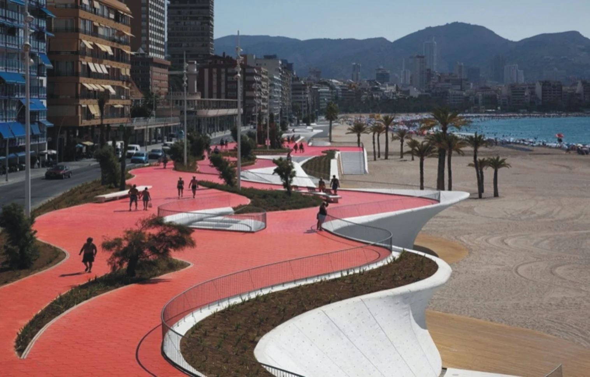
특히 상부는 전망대 역할을 하며 하부는 그늘을 제공하는 기능과 함께 독특한 컬러와 역동적인 형태로 주목을 끌고 있습니다. 또한 흰색 콘크리트로 설계하여 침수시에 대비하였으며 주변 벤치 등 시설물도 같은 컨셉으로 통합디자인 되었습니다.
그림 18 베니돔 씨 프론트 전경
그림 19 산책로 상부와 하부 연결 통로
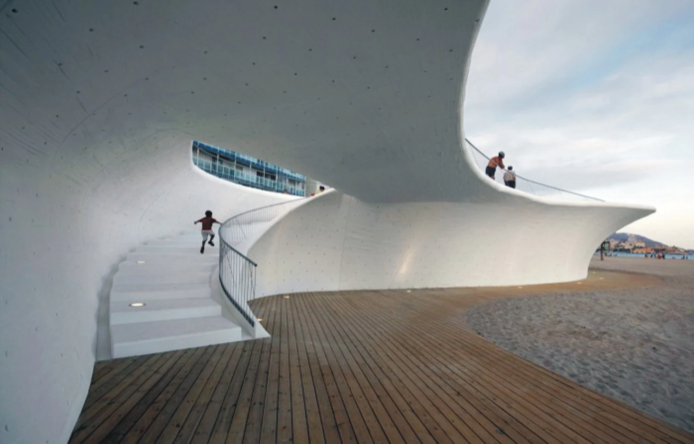
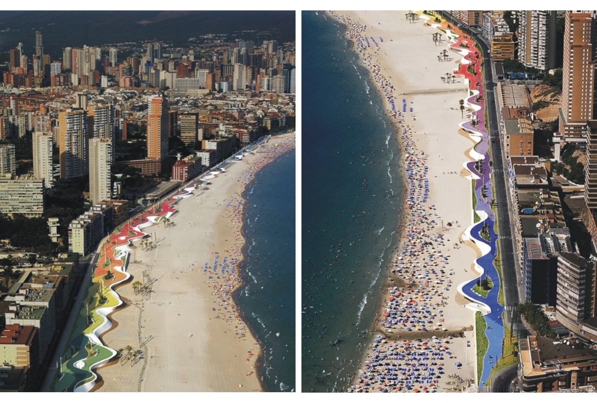
inage:en.wikipedia.org/ www.archdaily.com
참고문헌
권영상·조민선, 「수변공간 활성화를 위한 도시계획 및 설계방향」, 건축도시공간연구소, 2010.
김해련 외, 「대한민국 디자인 전략 2020보고서」, 한국디자인진흥원, 2011.
국토해양부외, 「해양 공간의 가치 창출을 위한 해양디자인기술 개발 기획연구, 2012
이현성외, 「해양공간디자인」, 미세움, 2013.